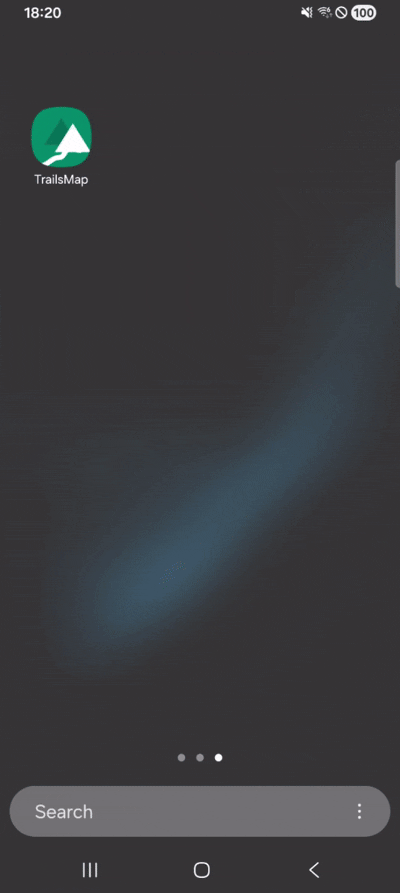

Hiking trails, wherever you are
Every trail
on the map.
Yours to explore.
TrailMap helps you discover and explore hiking trails around the world — browse destinations, find routes near you, and see everything you need on an interactive map before you set out.
What TrailMap does
Everything you need before — and during — the hike.
Browse by destination
Explore hiking destinations by city and country, or search directly by name.
Trails near you
Use your device's location to find trails within about 20 km, automatically.
Interactive OSM map (Open Street Map)
View every available trail on an OpenStreetMap-based map, and open any route for full detail.
Distance, gain & difficulty
Every trail shows distance, estimated duration, elevation gain, difficulty, a description, and a photo.
Animated route preview
Watch the route draw itself across the map before you decide it's the one.
Export to GPX
Save a favorite trail as a GPX file and carry it into any other hiking or navigation app.
See it in action
The app, doing exactly what it says.

Find & preview a trail
Browse destinations, search nearby, and open a route on the map.

Save a favorite
Keep routes you want to come back to, saved locally on your device.

Language & theme
Switch between English and Greek, and light or dark, right in the app.
Before you commit
Preview the route, not just the name.
Every trail opens into its full route, an animated preview, and the details that actually decide whether it's worth the drive: distance, duration, elevation gain, and difficulty.
Found the one you want? Save it to favorites, or export it as a GPX file to carry into any other navigation app.
Get the app
Download TrailMap
Available on iOS, Android, and Windows.
Latest version: v1.0.28